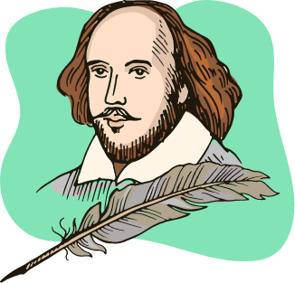
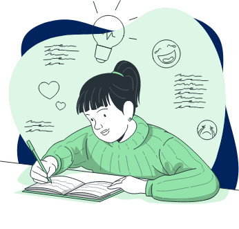
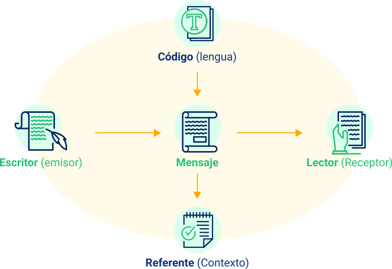
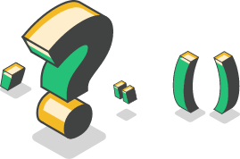
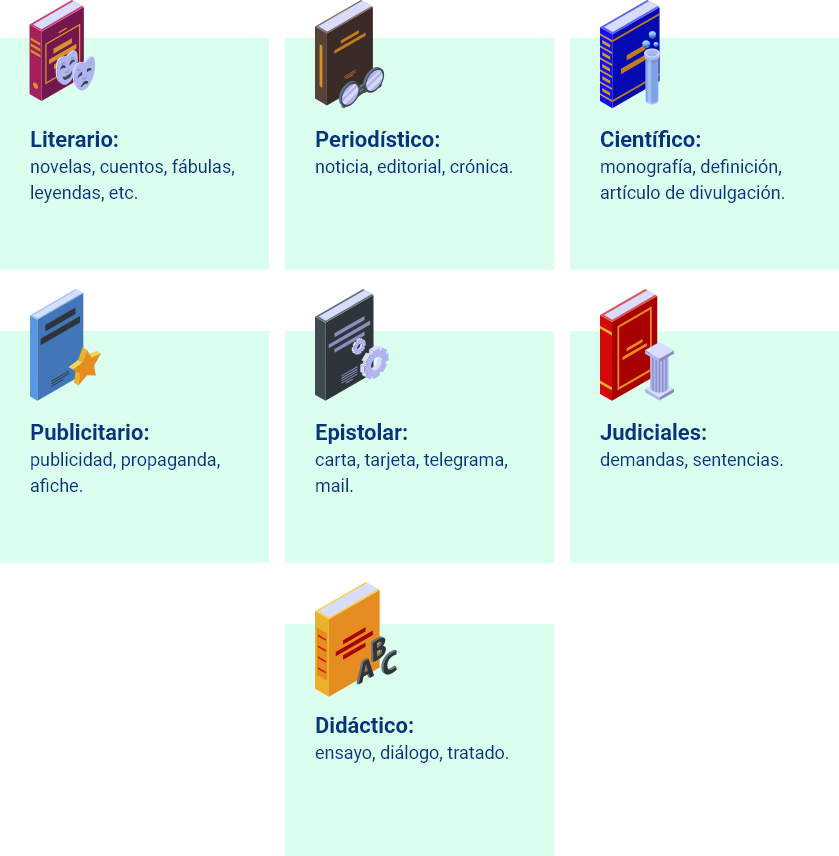

Introducción
El componente formativo de producción de textos escritos tiene como propósito invitar al aprendiz a explorar sus capacidades escriturales y, como resultado del aprendizaje, se espera que haga uso de la tipología textual en la construcción de un texto de acuerdo con requerimientos técnicos y con el entorno donde se desempeñe.
El contendido se desarrolla a partir de dos asuntos: el primero tiene que ver con la escritura propiamente, allí se presta especial atención al párrafo, pues cuando se escribe un texto, el que sea, se hace a través de párrafos. Se muestra la disposición de la idea directriz, la estructura del párrafo, algunas clases de párrafos y se dan algunos ejemplos. Un apartado se dedica a los pasos que se deben tener en cuenta en el proceso de redacción y se destaca el uso de los signos de puntuación y la importancia de relacionar las ideas a través de los elementos de enlace.
La segunda parte se dedica a la clasificación de los textos según el género y el tipo, dos formas de organizarlos que ayudan en la producción escrita. Se presentan las tres dimensiones de los textos y su relación con la microestructura, la macroestructura y la superestructura; esta parte culmina con algunas pautas para la producción de informes escritos y ensayos, dos documentos importantes en la formación académica.
1. El texto escrito
Un texto escrito es el que se produce con letras o grafías de una lengua o con los símbolos que esta utilice, desarrolla una idea principal soportada en ideas secundarias relacionadas unas con otras; utiliza un vocabulario preciso, adecuado, buena sintaxis y estructura organizada. El texto escrito cumple una función social, como es el caso de las grandes obras de la humanidad que han perdurado en el tiempo, verbigracia, las piezas literarias de reconocidos escritores cuyo oficio ha sido escribir.

1.1 La escritura
Escribir (verbo)
Significa producir textos relacionados con una situación comunicativa, que a su vez demanda el conocimiento sobre el tema, la búsqueda de la información, el manejo de la organización del texto, adecuarse a los lectores, organizar las ideas y el manejo del vocabulario.
Escritura (sustantivo)
Es una herramienta necesaria para desempeñarse de manera eficaz en distintas situaciones comunicativas de la vida diaria, profesional o laboral y fundamental en el trabajo académico. Es un sistema de representación gráfica de una lengua que hace uso de signos grabados o dibujados sobre un soporte material; es un método de comunicación humana que se realiza a través de signos visuales que constituyen un sistema.
La escritura es un sistema de comunicación visual basado en dibujos que se llaman letras, grafías, ideogramas, los cuales representan cosas e ideas.
Aprender a escribir es llegar a conocer e identificar ese conjunto de dibujos posibles para saber a qué se asocia cada uno de ellos; estas representaciones gráficas pueden relacionarse con sonidos del lenguaje, como sucede con el fonema /m/ que se representa la grafía M, con palabras o ideas completas o con signos gráficos como lo hacen algunas lenguas o idiomas, verbigracia, la escritura china o la escritura árabe.
Al igual que la lectura, aprender a escribir supone un proceso largo y de mucho esfuerzo intelectual, que se inicia en la infancia durante los primeros años de escolaridad, cuando se empiezan a reconocer las grafías y a asociarlas a sonidos concretos hasta llegar a expresar las ideas usando la escritura.
Escribir es una habilidad comunicativa que las personas deben desarrollar para transmitir sus ideas o pensamientos, pero es, tal vez, la habilidad a la que menos atención se presta. A diario, las circunstancias ponen a los individuos en situaciones en las cuales ellos deben producir un escrito, por ejemplo, hacer una petición, una solicitud, un reclamo, llenar un formato con alguna información, elaborar una hoja de vida, entre otras posibilidades; o en ambientes más complejos como los de la vida escolar, en los cuales es necesario presentar informes, resúmenes, reseñas, hasta escribir un ensayo.
La experiencia ha enseñado que la formación de la lengua materna durante la vida escolar privilegia especialmente el desarrollo del habla y un poco menos el desarrollo de la habilidad para elaborar textos escritos; algunos afirman que escribir es difícil, y en verdad lo es, especialmente cuando se trata de organizar las ideas de forma ordenada, usando oraciones enlazadas y relacionadas de manera coherente para expresar los pensamientos.
Tradicionalmente en la escritura era imprescindible tener a mano un lápiz y un papel, pero ya no es una condición obligatoria, puesto que los desarrollos tecnológicos permiten la escritura directamente en el dispositivo móvil.
Vista de esta manera, la escritura es un hábito que todos tienen y ponen en práctica en la cotidianidad; ese ejercicio de enviar o contestar mensajes puede ser un buen comienzo para empezar a escribir correctamente.
1.2 Funciones de la escritura
La escritura es una herramienta necesaria para comunicar las ideas, pues permite la interacción en diferentes circunstancias. Como un sistema de comunicación cumple las funciones que se presentan a continuación:
Función expresiva:
También se llama emotiva, se identifica con el emisor, el escritor es el centro de atención. Se manifiesta en escritos como diálogos, cartas, autobiografías.
Función informativo – referencial:
También llamada informativa, se centra en el referente y en el contexto; se encuentra en escritos como informes, crónicas, resúmenes, reglamentos.
Función poética:
el acto de comunicación está centrado en el mensaje, en la forma como se transmite. Se encuentra esta función en la literatura, verbigracia, en los cuentos, novelas, fábulas, decálogos, epitafios, chistes, poesías y en las escrituras creativas.
Función informativo – argumentativa:
tiene como propósito defender un punto de vista para convencer o disuadir al lector. Se puede identificar en las editoriales de periódicos y revistas, comentarios, y en ensayos.
1.3 El párrafo
Los textos escritos se organizan en párrafos, que son las partes de un texto que el lector identifica fácilmente por estar encerradas entre dos puntos y aparte. Puede contener varias oraciones que se identifican por el punto, y el punto y coma. Se considera también como la mínima unidad de redacción que desarrolla una idea.
1.3.1 Concepto.
El párrafo se considera la mínima unidad de redacción que desarrolla una idea; es cada una de las divisiones de un escrito; se reconoce por estar limitado por el punto y aparte. Es una unidad completa dentro del escrito; consta por lo general de la oración principal y las oraciones que le dan soporte a la oración principal.
Igual que las esponjas, antiguamente se consideraron los celentéreos como animales-plantas por su forma exterior; pero ya desde el siglo pasado se clasificaron definitivamente como animales, dadas sus características.
(Recasens de & Londoño, 1968).
Enmarcado por dos puntos y aparte.
Idea principal:
se consideraron los celentéreos como animales-plantas por su forma exterior.
Ideas secundarias:
Las esponjas se consideraron animales -plantas.
En el siglo pasado los celentéreos se clasificaron como animales.
Los celentéreos se clasificaron como animales por sus características.
Conector lógico de contraste:
pero.
Signos de puntuación para separar oraciones.
La idea principal se encuentra en una oración que se denomina oración temática, oración guía o idea directriz.
Esta oración puede aparecer al inicio del párrafo como un anuncio de lo que se va a tratar; puede estar en el centro del párrafo o al final, como la conclusión de lo expuesto.
Oración directriz
La oración principal o directriz se localiza al comienzo del párrafo. El desarrollo se hace a partir del aspecto general hacia los detalles particulares.
Oración directriz
La oración principal se encuentra hacia la mitad del párrafo.
Oración directriz
es la oración principal y se encuentra al final del párrafo; se parte de las ideas secundarias o los detalles para finalizar con la idea principal a modo de conclusión.
Ejercicio
Buscar párrafos de diferentes temas que tengan la oración principal localizada al comienzo, en la mitad y al final de estos.
Nota: este ejercicio, al igual que los siguientes no son evaluativos; sin embargo, se recomienda seguir las indicaciones dadas, lo cual le permitirá desarrollar sus capacidades escriturales.
1.3.2 Estructura.
Existen varias formas de estructurar un párrafo; este se puede desarrollar a partir de ejemplos, por contraste y por encuadramiento.
Por ejemplo: cuando un párrafo se desarrolla de esta manera, la idea se presenta a partir de la ejemplificación.
Una casa campestre es aquella que, por ejemplo, está ubicada en un clima suave y hermoso, rodeada de jardines plenos de flores como magnolias, cayenas o rosas.
Por contraste: se insiste en establecer la similitud entre objetos, palabras, ideas o lo que los hace diferentes. Es posible encontrar párrafos estructurados a partir de frases separadas o por pares, es decir, pasar de una descripción a la otra.
Los murciélagos
El murciélago es el único mamífero que vuela. A diferencia de las aves que son generalmente diurnas, los murciélagos son nocturnos y vuelan en la noche. Tienen muy buen oído, pero una visión muy pobre. No pueden ver en la oscuridad; sin embargo, pueden ver los objetos más próximos, pero no pueden ver objetos distantes. Tienen la capacidad de ver objetos en movimiento, pero no objetos estacionarios.
Ejercicio
Identificar la idea principal del párrafo.
Identificar las ideas secundarias.
Identificar la construcción mediante contraste.
Por encuadramiento: el párrafo tiene una estructura clara y sencilla señalada desde el comienzo.
Las plantas y los animales interactúan entre sí. Los animales dependen de las plantas para obtener su comida; de esta misma forma las plantas dependen de los animales. Todas las plantas y los animales tienen cuatro elementos: carbono, nitrógeno, hidrógeno y oxígeno. Estos elementos se combinan para formar las proteínas, las grasas y los carbohidratos tanto en los animales como en las plantas. Luego, ellos se usan en la fabricación de las células y los tejidos o como fuente de energía. El oxígeno se obtiene del aire y del agua; el agua es también fuente de hidrógeno para los seres vivos. El carbón y el nitrógeno provienen del aire, el mar y el suelo.
Ejercicio
Identificar posición de la idea principal.
Identificar ideas secundarias.
Identificar los conectores y las relaciones que establecen.
1.3.3 Clases de párrafos.
Una de las clasificaciones de los párrafos corresponde a la de narrativos, descriptivos y expositivo argumentativo.
Párrafo narrativo: cuenta, relata hechos o acontecimientos en torno a un sujeto u objeto. El párrafo narrativo se usa en textos científicos y literarios, lleva un orden cronológico.
Charlie Chaplin, quien murió en 1977 a la edad de 88 años, fue una de las más famosas estrellas en la historia del cine. Ha sido, ciertamente, el actor cómico más famoso del cine. Sus primeras películas se realizaron en la época del cine mudo; escribió y dirigió casi todas sus cintas y compuso la música de todos sus cuadros sonoros.
Ejercicio
Escribir un párrafo narrativo, cuya idea principal esté localizada al comienzo.
Párrafo descriptivo: se usa para describir, o sea, para pintar con palabras. Señala las características de las personas, animales, cosas y situaciones; se utiliza también para explicar ideas y definir personajes.
A través de la historia el hombre ha cambiado su medio ambiente físico con el propósito de mejorar su forma de vida. Con las herramientas de la tecnología ha alterado los rasgos físicos de la tierra. Ha transformado bosques y praderas en tierras cultivables, y ha hecho lagos y represas a partir de los ríos más caudalosos, para la irrigación o generación de energía eléctrica. El hombre ha modificado la superficie de la tierra, drenando pantanos y fracturando las montañas para construir carreteras y ferrocarriles.
Ejercicio
Escribir un párrafo descriptivo, cuya idea principal esté localizada al final de este.
Párrafo expositivo argumentativo: tiene como propósito dar sustento a una idea o tesis de un autor, exponer las razones de manera coherente y lógica, persuadir al lector; establece una tesis y señala o indica las razones de lo expuesto; es frecuente el uso de citas de autores, cifras, etcétera. En un párrafo expositivo argumentativo pueden usarse párrafos narrativos o descriptivos.
“Fumar es un hábito que actualmente se encuentra catalogado como nocivo, pero las personas que apuestan sobre el hábito constructivo del tabaquismo exponen que el daño se produce principalmente por una serie de vasodilatadores y aglutinantes que se van acumulando en los pulmones. El principio en el que basan esto, es que bajo su experiencia personal no han sufrido daños por fumar pipa o puro, algo que sí se presenta con el cigarrillo y más si el cigarrillo se fuma en forma diferente a la que utilizaron los indígenas, quienes lo usaban como medio religioso y con métodos poco convencionales. El cigarrillo se fuma llegando a los pulmones y los fumadores de puro solo degustan el humo y el sabor que se produce al maridaje” (Ejemplode, 2013).
Ejercicio
Buscar algunos párrafos argumentativos e identificar la idea base (tesis) y los argumentos que le dan soporte.
Adicionalmente, hay otras clasificaciones que se relacionan con el contenido de los párrafos y la parte a la cual pertenecen o están relacionados, así: párrafos de introducción, desarrollo y conclusión.
|
Por el contenido |
Función |
Formas de estructuración |
|
Párrafo de introducción |
Establecer el primer contacto del lector con el texto. Tiene como función captar el interés y la atención desde el inicio. |
Mediante síntesis, anécdota, interrogante, cita, analogía, frases cortas o breves. |
|
Párrafo de desarrollo |
Desarrollar la idea principal del párrafo. |
Enumeración, secuencia, comparación/contraste, causa y efecto, desarrollo de un concepto, solución de un problema. |
|
Párrafo de conclusión |
Cerrar el texto o escrito; es necesario un cierre en el que aparezcan los asuntos más importantes. |
De cita, interrogante, anécdota, analogía, afirmaciones breves. |
Ejercicio
Elaborar un texto escrito en el cual el contenido se desarrolle mediante el uso de un párrafo de introducción, varios de desarrollo y uno de conclusión.
1.3.4 Redacción de párrafos.
Se considera que escribir supone la interrelación de cuatro procesos básicos:
Desarrollar un plan.
Ordenar las ideas.
Organizar el texto.
Corregir.
(Serafini, 1993).
Para redactar un párrafo, inicialmente se parte de la idea que se tiene en mente para su composición.
La planeación
Se reitera, antes de desarrollar la planeación del escrito que es necesario disponer de la idea sobre la cual se va a escribir. En esta fase se diseña el plan o se proyecta todo aquello que se va a escribir; por razones prácticas, todo aquel que quiere escribir necesita definir el tiempo para la escritura y para la comprensión de las características del escrito, es decir, si es narración, descripción, exposición, entre otros.
Es bueno tener en cuenta que en la vida académica el flujo de tareas, sumadas a los deberes de cada individuo, hace que el tiempo del que se dispone para el estudio sea limitado; por supuesto, lo mismo sucede cuando se escribe. En este sentido, la planeación es un asunto un tanto personal que puede hacerse en cualquier momento, dependiendo de las circunstancias de cada persona. En la vida actual poco se usa el papel y el lápiz para la escritura, esta se puede hacer directamente en el computador o dispositivo móvil, teniendo en cuenta los pasos sugeridos.
Se aprende a escribir, escribiendo, así como se aprende a leer, leyendo, y a pesar del desarrollo de la tecnología, tal vez la mejor forma para aprender a escribir sea con un lápiz y un papel.
Cuando se planea el escrito se sugiere tener en cuenta estos asuntos:
El orden de las ideas
Este momento consiste en la producción de las ideas (preescritura) y en la producción del texto (escritura); comprende la recolección de la información para documentarse o informarse sobre el tema, la organización de las ideas, la determinación de la idea central que se va a desarrollar y la redacción de un borrador o esbozo del escrito.
Las conexiones:
Hay elementos lingüísticos que establecen conexiones formales y de significado entre las distintas oraciones, poniendo de manifiesto las relaciones entre partes diferentes de la estructura del contenido del párrafo (del texto). Al igual que las conjunciones coordinantes y subordinantes relacionan sintagmas y oraciones dentro de un enunciado; las conexiones son las palabras o las expresiones que enlazan las ideas dentro de un párrafo y entre párrafos y, ayudan al lector a seguir el hilo del discurso.
Ejemplos de algunos conectores:
Adición: y, también, además, más, aún, por otra parte, sobre todo, otro aspecto.
Conclusión: para terminar, resumiendo, por último, finalmente, en conclusión, en suma, en síntesis, como conclusión.
Consecuencia, causa y efecto: porque, por consiguiente, por esta razón, puesto que, por lo tanto, de modo que, por eso, en consecuencia, esto indica.
Contraste: pero, sin embargo, por el contrario, aunque, no obstante, si bien, por el contrario, al contrario, antes bien, en cambio.
Ejemplificación: tal como, como caso típico, en representación de, como muestra, verbigracia, por ejemplo, así como, en otras palabras, esto es.
Reafirmación: en efecto, efectivamente, ciertamente, en síntesis, en breve, en otros términos.
Relación espacial: arriba, abajo, a la derecha, a la izquierda, junto, al lado, por encima.
Relación temporal: después, mientras, primero, entonces, luego, anteriormente, al mismo tiempo.
Semejanza: de igual manera, del mismo modo, como, igualmente, de forma similar, tal como, tal cual.
Los signos de puntuación:
son necesarios en la lengua escrita para marcar las pausas, aclarar el sentido de las frases; tienen la función de subdividir el texto para favorecer la comprensión, delimitan las oraciones y los párrafos, establecen la jerarquía sintáctica entre ellas y ordenan las ideas.
|
Función de los signos de puntuación |
Signos |
|
Relacionados con las pausas |
Coma (,), punto y coma (;), punto (.) seguido y aparte, dos puntos (:) |
|
Relacionados con la entonación |
Puntos suspensivos (…), interrogación (¿?), exclamación (¡!), paréntesis curvo () |
|
Relacionados con la distribución |
Comillas (““), guion (-), raya (-), asterisco (*), paréntesis cuadrado o corchete {} |
La introducción:
tiene como propósito crear el ambiente para el lector.
La conclusión:
es necesario un párrafo final que cierre el escrito y que le permita al lector claridad sobre lo leído.
Corregir el texto
Comúnmente la revisión la lleva a cabo el autor. Corregir consiste en inspeccionar la redacción y es de gran importancia para la correcta elaboración del escrito. Es bueno generar la costumbre de leer varias veces de manera crítica lo que se escribe, de esta forma se identifican los posibles errores, repeticiones y otros asuntos que pueden reconocerse en un texto.
La corrección permite comprobar que el texto esté estructurado correctamente, es decir, que los párrafos se encuentren organizados y que tengan un orden. En la revisión puede suceder que se elimine información innecesaria o que se cambie de lugar algunas ideas o párrafos; es preciso, además, detenerse en el contenido, todo aquello que se manifestó respecto al tema del texto, una idea central que se desarrolla a partir de ideas secundarias, de igual manera, los párrafos deben desarrollar una idea principal.
Ejercicio
Escribir un texto sobre un tema de interés personal, seguir los cuatro pasos propuestos.
2. Factores de la comprensión lectora
Se precisa recordar que el texto es la
Unidad lingüística comunicativa fundamental, producto de la actividad verbal humana, que posee carácter social.
(Bernárdez,1982).
De acuerdo con Alexopoulou (2011), el texto tiene tres dimensiones:
La estructura textual
se logra a partir de dos niveles de organización textual: el plano local y el plano global.
El plano local
se sitúa en el nivel de las oraciones; equivale a la microestructura del texto, se asocia con los constituyentes de la oración y corresponde a la coherencia global en cada párrafo.
Microestructura (constituyentes y coherencia)
Se ocupa de la estructura de las oraciones, de las relaciones entre oraciones.
Concordancia sujeto/verbo, género/número.
Cohesión: ilación de secuencia de oraciones con conectores.
Coherencia global y coherencia lineal.
Segmentación de unidades como oraciones y párrafos.
La coherencia global:
Es el asunto del que trata el texto y que le da unidad de sentido; se conoce como “tema”.
La coherencia lineal:
Disposición y orden de las ideas en el texto, es decir, la disposición de las ideas en el “esquema”.
El plano global
Se ubica en el nivel textual, está compuesto por la macroestructura, que se relaciona con el contenido semántico del texto (significado), y por la superestructura que representa el esquema organizativo del texto, en otras palabras, la distribución de los contenidos de acuerdo con un orden establecido.
Macroestructura (significado)
Se ocupa de la coherencia global del texto (propiedad semántica).
De mantener un eje temático a lo largo del texto.
Del tema.
De los subtemas.
Superestructura (esquema organizativo del texto)
Se ocupa de la forma global como se organizan los componentes de un texto.
Esquema lógico de organización del texto:
Textos narrativos: cuento (inicio, nudo, desenlace).
Textos informativos: noticia (qué, cómo, cuándo, dónde).
textos argumentativos: ensayo (tesis, argumentos).
(MEN, 1998).
El significado
La semántica, disciplina lingüística, tiene como objeto el estudio del significado de las palabras a partir de sus componentes (raíces y terminaciones), es decir, de su etimología y del cambio de los significados en el transcurso del tiempo. Se interesa, también, en los accidentes del significado como los sinónimos (significado similar o parecido), antónimos (significado contrario), homófonos (vocablos que se oyen igual o parecido, pero que tienen significados diferentes).
Hay dos clases de significado:
Significado de base o denotativo:
Es el significado básico de las palabras, el que comúnmente se encuentra en los diccionarios, es conocido por los hablantes de la comunidad lingüística. Todas las palabras tienen un significado, por ejemplo, casa, árbol, ciudad, país, viajar, vivir, etcétera.
Significado connotativo:
Es uno o varios significados que una palabra puede adoptar, además de su significado de base cuando un término tiene varios significados se denomina polisémico; la polisemia es la pluralidad significativa de una palabra.
Por ejemplo, el significado denotativo o básico del término “corazón” es: “víscera torácica, hueca y muscular de forma cónica que es el órgano principal de la circulación de la sangre” (RAE, s.f.); “corazón”, adicionalmente puede significar el centro de una cosa o el eje, afecto, amor. En este caso la palabra es polisémica.
Lo mismo ocurre con el vocablo “muela”, que el diccionario define como: nombre de los dientes grandes posteriores a los caninos; lugar que sobresale respecto a otro; tercera persona del verbo moler, etcétera (RAE, s.f.).
“El avión está volando sobre la ciudad” (significado denotativo = significado real).
“Me vuelo al supermercado a comprar lo que me hizo falta” (significado connotativo = rapidez).
“Le hicieron una operación a corazón abierto” (significado denotativo = real).
“El hombre era de buen corazón” (significado connotativo = emocional o afectivo).
En algunos casos, la pluralidad de significados puede generar ambigüedad, que se entiende como el doble sentido de una oración o frase; pensar en estos ejemplos:
“Se venden carteras para señora de cuero de cocodrilo”.
“Ojos de perro azul”.
2.1 Los géneros y tipos textuales
Con el propósito de tener claridad sobre los textos se utilizan los conceptos género y tipos textuales.
Se presenta esta clasificación para todos los aprendices, especialmente aquellos que tengan algún tipo de interés en la escritura de cuentos, relatos o novelas u otro tipo de escrito, también, porque las rutinas laborales, seguramente, los pondrá en la situación de redactar distintos textos en los cuales tendrá que decidir cómo proceder.
Los géneros
Son formas discursivas tradicionales construidas a lo largo de la historia de una comunidad lingüística; por lo tanto, son productos socioculturales reconocidos por los miembros de esa comunidad. Tienen lugar en un contexto social, siguen algunas normas y convenciones con una finalidad.
Aunque los géneros pertenecen a una tradición, están sujetos a modificaciones para dar respuesta a los cambios que tienen lugar en las sociedades; es el caso de las Tecnologías de la Información y la Comunicación (TIC) que han favorecido la aparición de los géneros electrónicos como el chat, foro de discusión, webinar, e-mail, twitter, blogs, redes sociales.
Algunos géneros corresponden a:
Los Tipos
Los tipos son “realidades abstractas, lingüístico-comunicativas, en principio invariables y por lo tanto constituyen un repertorio cerrado de formas, según las particularidades de cada tipo”.
(Alexopoulou, 2010).
Los tipos de textos y sus modalidades son:
Informativos:
Tienen como propósito dar a conocer hechos o situaciones, por ejemplo, la noticia, el afiche, la circular, la carta, el artículo periodístico.
Narrativos:
Relatan hechos, acontecimientos, como es el caso del mito, fábula, apólogo, cuento, relato, novela, obras de teatro, historietas.
Argumentativos:
Expresan opiniones para convencer; entre ellos se encuentran el ensayo, artículo de opinión, reseña, editorial de periódico o revista.
Explicativos:
Se ocupan de hacer comprender un tema, como en la reseña, recetas de cocina, reglas de un juego, instrucciones (para armar juguetes, muebles e instalar objetos).
De acuerdo con esta clasificación, una noticia pertenece al género periodístico y su tipo de texto es informativo. Un ensayo pertenece al género didáctico y su tipo de texto es argumentativo. La novela es un texto narrativo en la que predomina la narrativa; no obstante, la novela en la mayoría de los casos integra textos descriptivos, diálogos, etcétera.
2.2 Producción de textos
Producir un texto es redactarlo; esto equivale a planearlo, definir el propósito, escribir una primera versión, releerlo, corregirlo; tener en cuenta los niveles textuales: el léxico, el significado, la estructura de las oraciones, la relación entre ellas, la ortografía y la puntuación.
Se abordan dos textos de uso frecuente en las actividades académicas:
El informe escrito y el ensayo.
2.2.1 El Informe escrito.
Un informe escrito es la exposición de los datos obtenidos en una consulta sobre un determinado tema o la exposición de los resultados de una investigación; durante el tiempo que toma la formación académica y posteriormente en la vida laboral es necesario la presentación de informes.
A continuación, unas pautas para elaborarlos:
En cuanto al contenido:
El tema: debe ser concreto e interesante; además, es necesario comprenderlo para redactar las ideas claramente.
El plan: seguir una estructura (introducción, desarrollo y conclusión).
Es requisito indispensable consultar diferentes fuentes de información que traten el tema, es decir, libros, revistas científicas, revistas especializadas, bases de datos reconocidas que las bibliotecas de las instituciones educativas poseen. Si la consulta se hace en línea es fundamental ser muy cuidadoso respecto al material que allí se encuentra.
Seleccionar el material que se considera importante.
En cuanto a la redacción:
Tener en cuenta todos los aspectos de la morfosintaxis y de la redacción de párrafos. No olvidar que, mediante oraciones cortas, breves se logra más fácilmente la claridad.
La ortografía: la correcta utilización de las palabras y del vocabulario.
La puntuación: uso adecuado de los signos de puntación para la correcta separación de las oraciones y una buena comprensión de las ideas.
En cuanto la presentación, esta depende de la situación; en la actualidad es poco usual imprimir trabajos para entregar al maestro, todo o casi todo se hace en la red.
Ejercicio
escribir un informe relacionado con un tema de estudio.
2.2.2 El ensayo.
Definición: Es un tipo de prosa que brevemente analiza, interpreta o evalúa un tema; se considera un género literario a igual que la poesía, la ficción o el drama. Intenta resolver un problema por medio de argumentos.
Características:
Parte de una pregunta.
Hace uso de un lenguaje formal.
Se escribe en tercera persona o con voz neutra.
Se escribe para un lector.
Propósito: demostrar los propios conocimientos sobre un tema.
Pasos para la escritura de un ensayo
Hacer una lista de ideas: buscar un orden lógico y ordenarlas por categorías.
Hacer un esbozo.
Escribir el primer borrador y luego todos los que sean necesarios (De la mano con la literatura, 2012).
Organización
Un ensayo consta de tres partes fundamentales: introducción, desarrollo expositivo-argumentativo, conclusión y referencias bibliográficas.
Introducción: Indica al lector el propósito del escritor, el acercamiento al tema y la organización que seguirá el ensayo. Se plantea la tesis o idea base que articula al texto y que quiere debatirse o cuestionarse, la cual debe sustentarse en el desarrollo del ensayo a través de los argumentos.
Nudo o cuerpo: Desarrolla los aspectos planteados en la introducción. Son cruciales en esta parte el uso adecuado de conectores y un buen manejo de la lógica. Se presentan los argumentos que sostienen la tesis que se expone. En el ensayo académico no se usa ni la descripción, ni la narración, sino la exposición.
Conclusión: aunque no siempre es el último párrafo del ensayo, si debe recoger las ideas que se presentaron en la tesis, en la parte introductoria.
Ejercicio
Se sugiere leer el ensayo “La polémica de la ortografía” de Gabriel García Márquez.
Disponible en el siguiente enlace:
La polémica de la ortografía
Glosario
Analogía:Semejanza formal entre los elementos lingüísticos que desempeñan igual función o tienen entre sí alguna coincidencia significativa.
Anécdota:Relato breve de un hecho curioso que se hace como ilustración, ejemplo o entretenimiento.
Grafía:Modo de escribir o representar los sonidos, y, en especial, empleo de tal letra o tal signo gráfico para representar un sonido dado.
Ideograma:Imagen convencional o símbolo que en la escritura de ciertas lenguas significa una palabra, morfema o frase determinados, sin representar cada una de sus sílabas o fonemas.
Síntesis:Descripción abreviada de los contenidos más importantes de un determinado texto.
Material complementario
| Nombre del documento o material. | Tipo de material. | Enlace del Recurso. |
|---|---|---|
| Alexopoulou, A. (2010). Tipología textual y comprensión lectora. En E/LE. Revista Nebrija de Lingüística Aplicada. | Descargar | |
| Alexopoulou, A. (2011). El enfoque basado en los géneros textuales y la evaluación de la competencia discursiva. | Descargar | |
| Ministerio de Educación Nacional - MEN. (1998). Serie lineamientos curriculares. Lengua castellana. | Descargar |
Referencias bibliográficas
Alexopoulou, A. (2010). Tipología textual y comprensión lectora. En E/LE. Revista Nebrija de Lingüística Aplicada.https://www.nebrija.com/revista-linguistica/files/articulosPDF/articulo_530b646902516.pdf
Alexopoulou, A. (2011). El enfoque basado en los géneros textuales y la evaluación de la competencia discursiva.https://cvc.cervantes.es/ensenanza/biblioteca_ele/asele/pdf/21/21_0097.pdf
Bernárdez, E. (1982). Introducción a la lingüística del texto. Madrid: Espasa-Calpe.
De la mano con la literatura. (2012). El ensayo. [Blog].http://jsaraviacespedes.blogspot.com/2012/05/el-ensayo.html
Ejemplode. (2013). Ejemplo de párrafo argumentativo. En Revista Ejemplode.https://www.ejemplode.com/12-clases_de_espanol/2640-ejemplo_de_parrafo_argumentativo.html
García, G. (2005). La polémica de la ortografía.http://gabazo.blogspot.com/2005/01/ensayos.html
Ministerio de Educación Nacional - MEN. (1998). Serie lineamientos curriculares. Lengua castellana.https://www.mineducacion.gov.co/1621/articles-339975_recurso_6.pdf
Real Académica Española. (s.f.). Corazón. En el diccionario de la lengua española.https://dle.rae.es/coraz%C3%B3n
Real Académica Española. (s.f.). Muela. En el diccionario de la lengua española.https://dle.rae.es/muela
Recasens de, J., Londoño, B. (1968). La naturaleza. Biología animal. Bogotá: Voluntad.
Serafini, M. (1993). Cómo redactar un tema. Barcelona: Paidós.
Fotografías y vectores tomados de https://www.shutterstock.com/ y https://www.freepik.es/
Licencia Creative Commons
CC BY-NC-SA
Ver licencia.